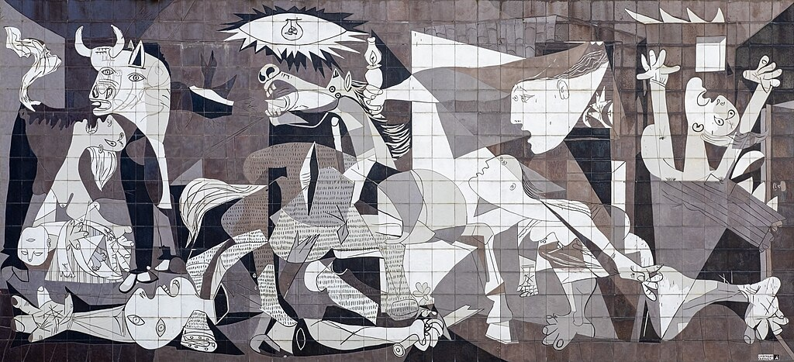
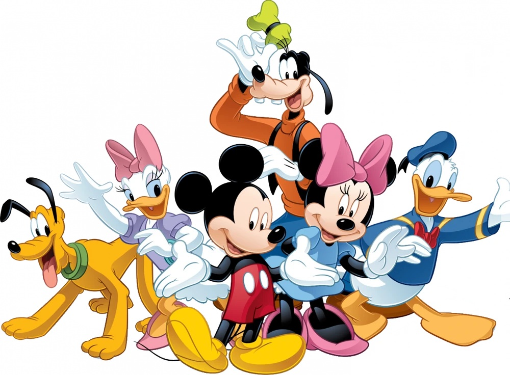
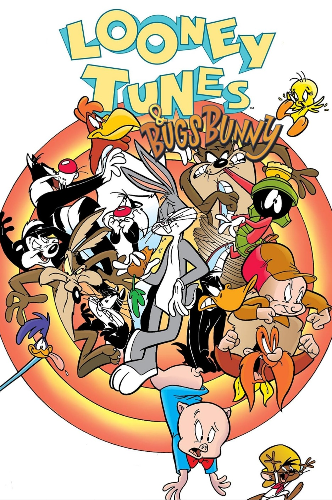
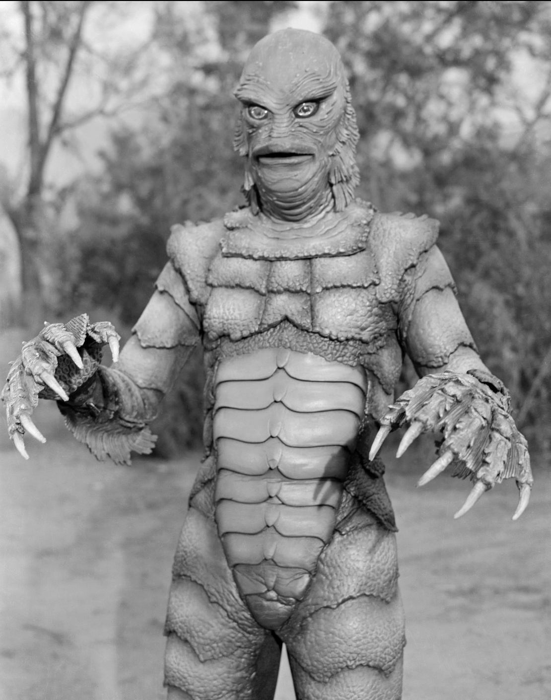
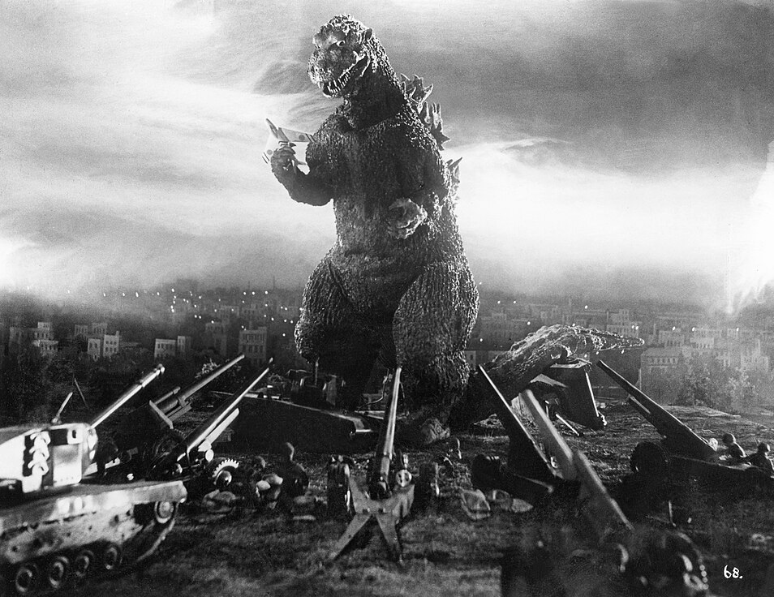

Times Square

Exhibitions
Bipolar Surrealism, Opera Gallery, New York, New York, US, May 24–June 11, 2001.
Reimagining “Guernica” / La réinvention du “Guernica”, Museo de la Paz de Gernika, Gernika-Lumo, Bizkaia, Spain, April 4–December 10, 2017. The composition was presented as a print on stretched canvas, not as the original painting.
Literature
Ron English, Popaganda: The Art & Subversion of Ron English (San Francisco: Last Gasp, 2001), pp. x–xi. ISBN 1-887128-60-3.
Ron English, Abject Expressionism: The Art of Ron English (San Francisco: Last Gasp, 2007), p. 110. ISBN 978-0867196894.
Ron English, Original Grin: The Art of Ron English (Paris: Cernunnos, 2019), p. 225. ISBN 978-2374950938.
Cultural & Artistic References

Pablo Picasso, Guernica, 1937
Public domain image.

Disney characters
Disney Wiki

Warner Bros. / Looney Tunes characters
Warner Bros. Entertainment Wiki

Creature from the Black Lagoon
IMDb

Godzilla
Wikipedia

Supermanwww.dc.com